Pixbyte

About
Our mission is to tackle business challenges while prioritizing exceptional user experience, seamless interactivity, and inclusive web accessibility.
Challenge
As a team, we continuously challenge ourselves to set a new standard in valuing web accessibility, user experience, and interactivity. Our goal is to
create innovative and inclusive designs that not only enhance digital experiences but also leave a lasting impact on a global scale. Through creativity,
collaboration, and a commitment to excellence, we strive to shape the future of design and technology.
Development
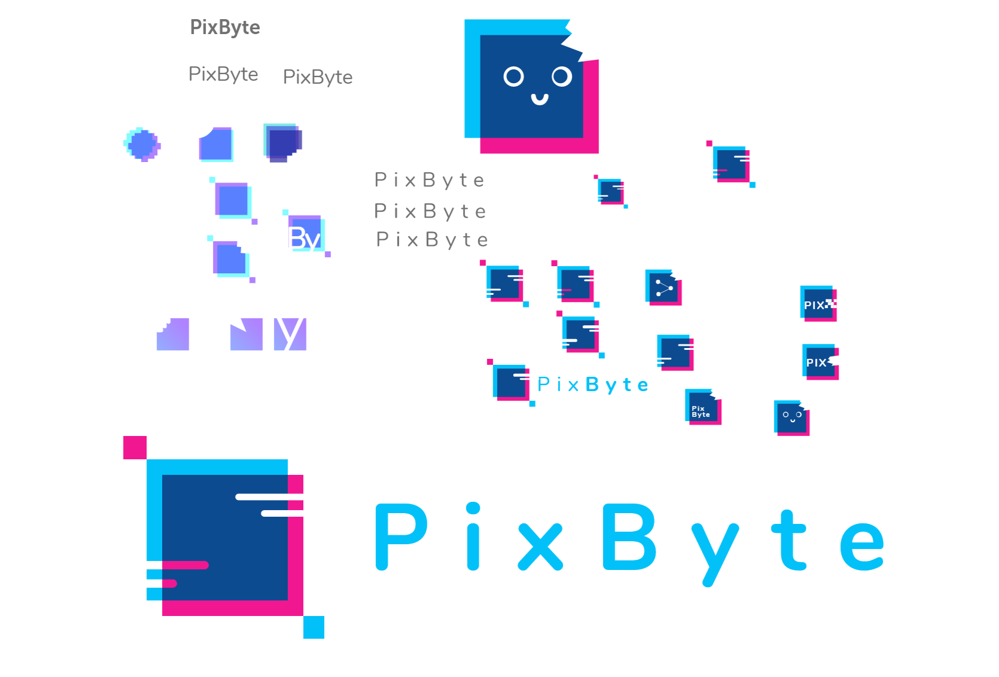
 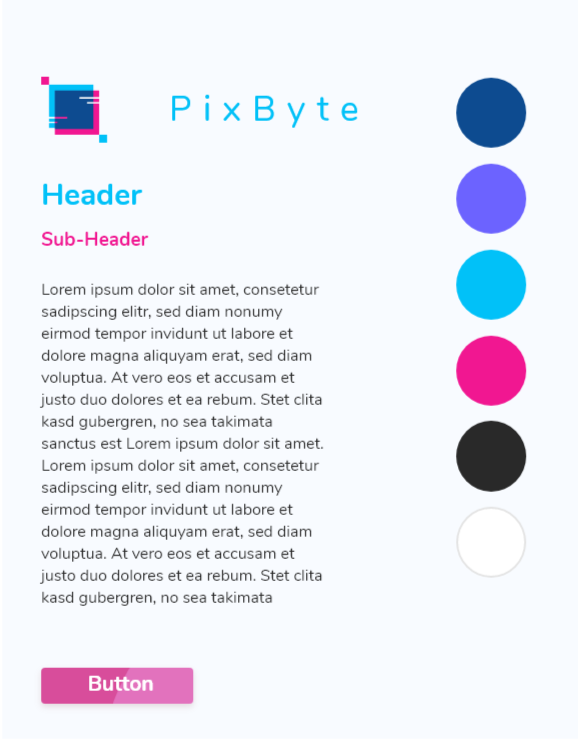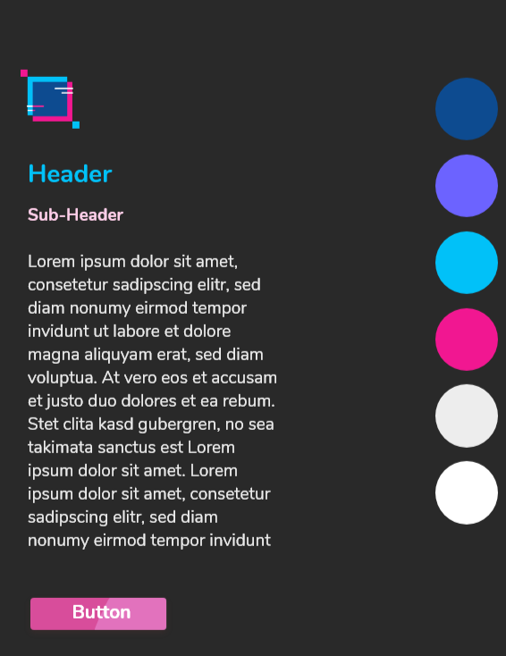
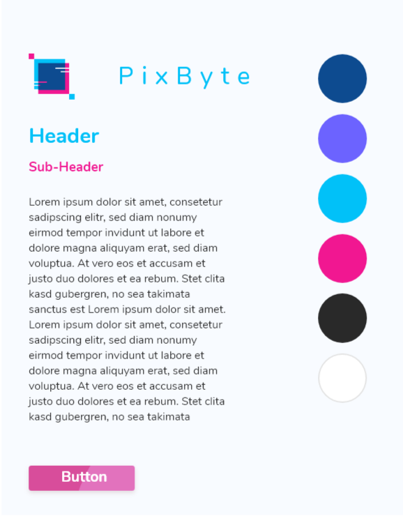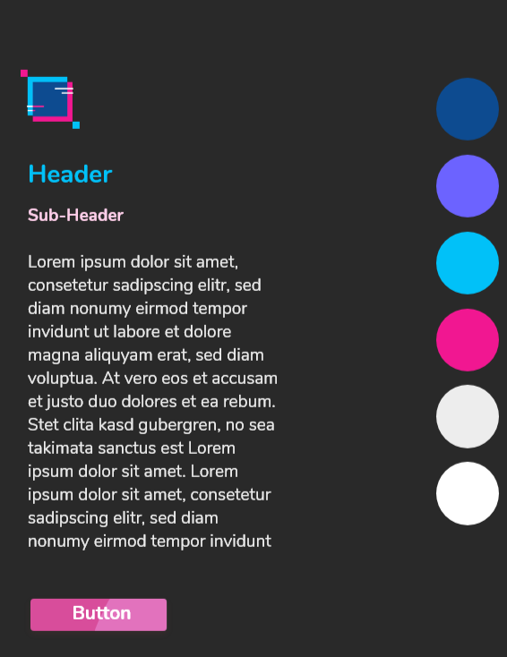
Market
Our strategy for acquiring clients involves multiple channels, including a dedicated landing page, social media platforms (Instagram,
Twitter, Facebook, LinkedIn, Behance, and Dribbble), workshops we host, podcasts, and even a Skillshare course. By offering valuable, free
resources that share tips and insights on user experience, we aim to educate our audience, empowering them to recognize the difference between
good and bad design. This approach not only builds trust and credibility but also establishes us as thought leaders in the industry. Additionally,
our social media presence will showcase our designs and provide regular UX and web accessibility tips.
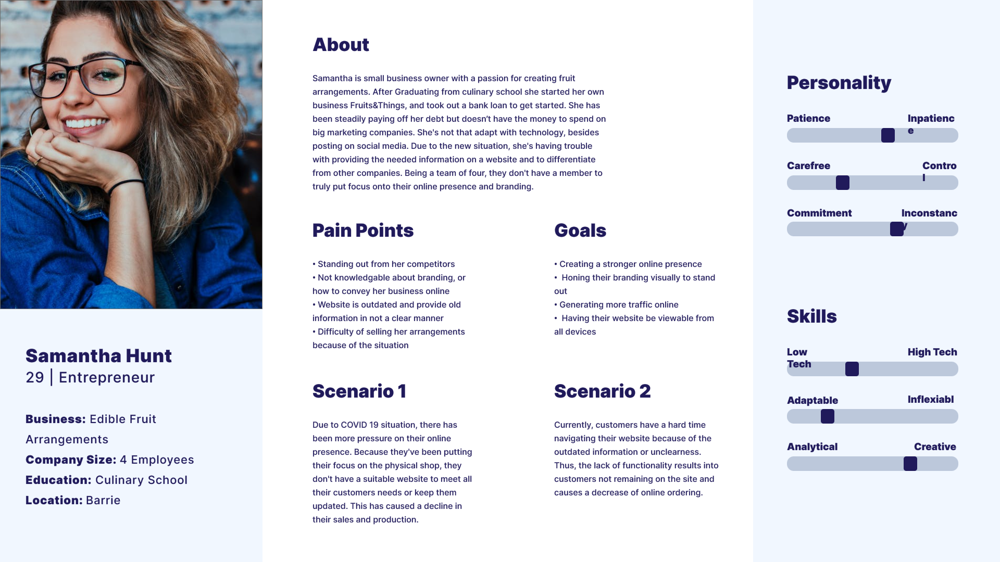

 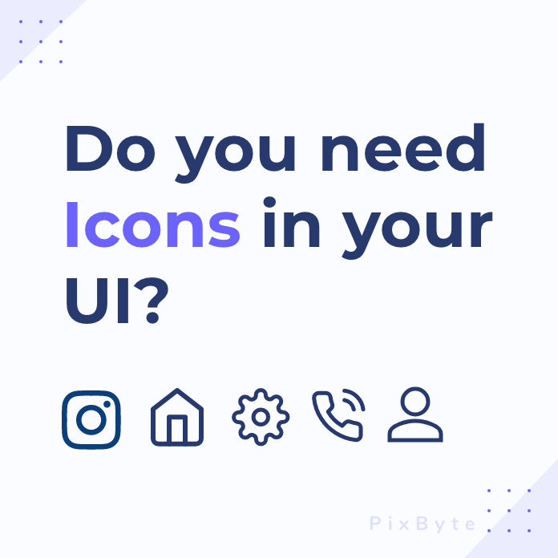
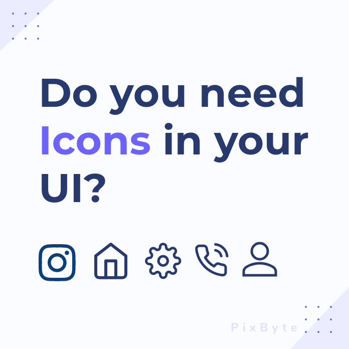

Interface
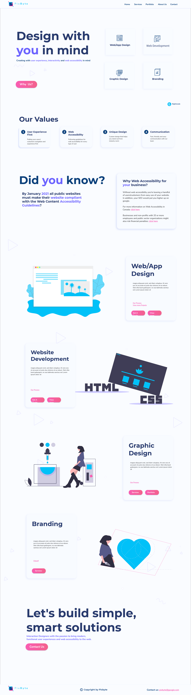
Pixbyte is a digital design service dedicated to solving challenges in web accessibility, user experience, and interactivity — all while delivering
distinctive, high-quality designs that reflect our core values.
What sets us apart is our holistic approach. We don't just create modern, professional designs; we ensure they are accessible and user-friendly.
Plus, we have the technical expertise to bring our designs to life through our own coding. This combination of design and development skills is
still rare in the industry, giving us a unique edge.
Our primary focus is on supporting small businesses and creators, such as Etsy shop owners and independent entrepreneurs, helping them build
impactful online presences that stand out and engage their audiences effectively.
Nuvo Network

About
This project aims to enhance NUVO Network's social media presence, with a particular focus on Instagram due to its higher levels of activity. Our goal
is to create a cohesive, visually appealing layout that serves as a dynamic space where both current and prospective members can easily explore what
NUVO has to offer. Interactivity and community engagement will be central to this approach.
To inform our design decisions, we will conduct thorough research using a combination of primary sources, including insights from NUVO Network members,
and secondary sources by analyzing successful examples from other companies. This comprehensive research will guide us in developing a website that
effectively meets NUVO Network's needs and elevates its online presence.
Reseach Question
How can we improve how NUVO interacts with tenants and potential members through their social media platforms?
Top Three Methods
Secondary Research
Using information that other people have already put together with their own research. Also using publicly available information to better inform our studies.
Competitive Product Analysis
Using information that other people have already put together with their own research. Also using publicly available information to better inform our studies.
Competitive Product Analysis
The interview will be a very important aspect of our research still we will be able to get an account of who things work within the company and have the opinions
of the staff and members. We will be able to create profiles based off of real people who attend these facilities. The interviews let us observe the reactions
and the emotions of individual people and how they feel about the company. With this information we are capable of obtaining new and updated information on the
company and members.
My Comparative Research
My analysis of Project Spaces social media presence.
 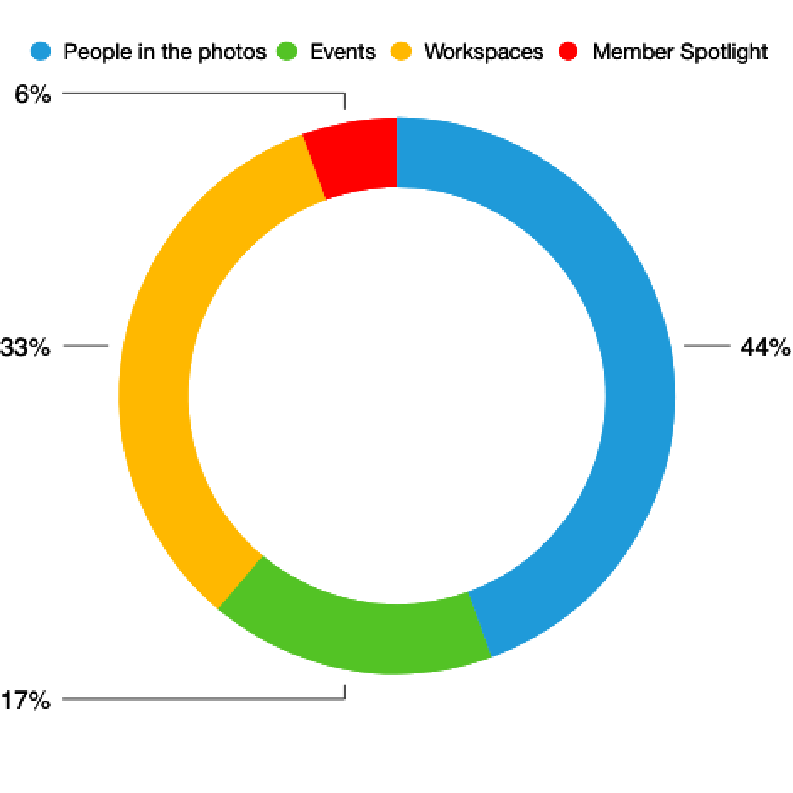
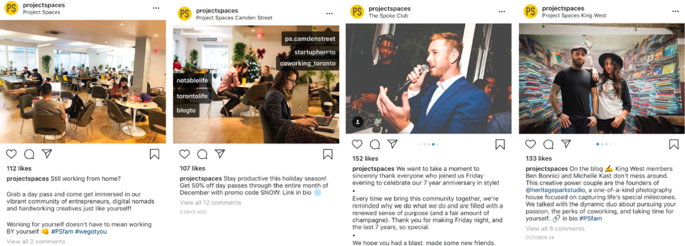
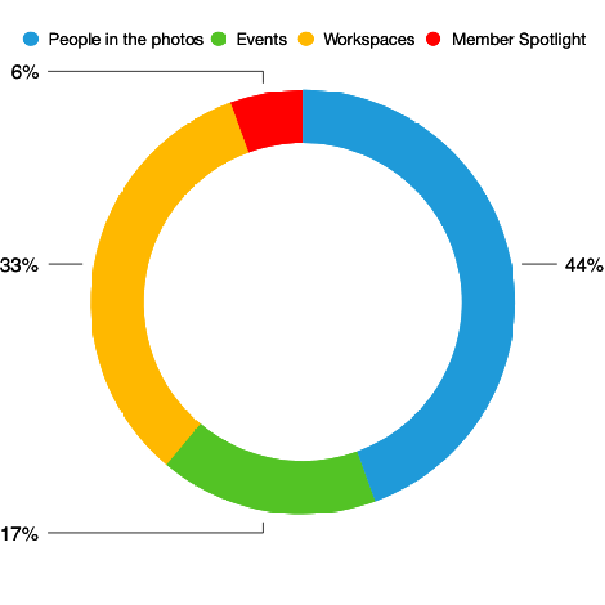
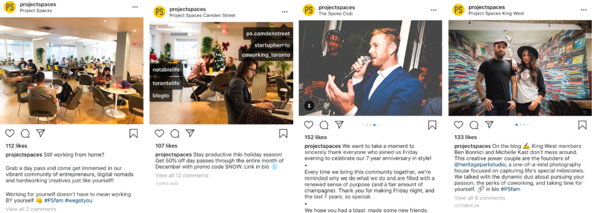
Project Spaces values personal connections and fosters a sense of community by actively engaging with their members—tagging them in photos and celebrating
their involvement. Their feed maintains a strong sense of consistency, with high-quality images that complement each other in tone, color, and subject matter.
Additionally, they post frequently, ensuring a dynamic and engaging presence.
Conclusions
In conclusion, our analysis of social media strategies used by other co-working spaces has shown that leveraging all platform features—such as stories,
hashtags, and reposting—can significantly boost community engagement and overall traffic. If NUVO adopts these strategies, we believe they could see
substantial benefits.
United Way

About
My team and I designed a volunteer portal tailored for young adults as an extension of United Way's existing website, enhancing their digital presence and making it
easier for young volunteers to get involved.
Challenge
How do we create new and innovative opportunities for our youth to roll up their sleeves, get involved in our communities and volunteer by contributing their
resources and becoming part of initiatives such as the GenNext Program.
Planning

Taking insporation from the stle guide United Way already had, we incorperated that into our new design. The intention of this was to make the new portal
look Cohesive with the remainder of the website.

The target audience for this portal is college/university student who need to complete mandatory community service hours.

Marketing
We propose a focus on advertising the volunteer opportunities on College/University Job boards with a direct link to the portal. People can create a profile
and easily apply to take part in volunteer opportunities in their community.


Interface


My team and I proposed a GenNext volunteering board, featured alongside post-secondary job boards to increase visibility and accessibility for young adults.
By providing a direct link, the platform makes it easy for users to explore opportunities that match their skills and interests. The portal would also track
and update proof of skills, offer networking opportunities, and support personal growth through education and character development. Additionally, we suggested
enhancing how United Way presents its volunteer opportunities, making them more appealing to younger demographics. This reimagined approach aims to foster
stronger connections and drive greater involvement among young adults, creating a more engaged and empowered volunteer community.
Logo Demo

Final Logo


Colour

Analysis


Experiments
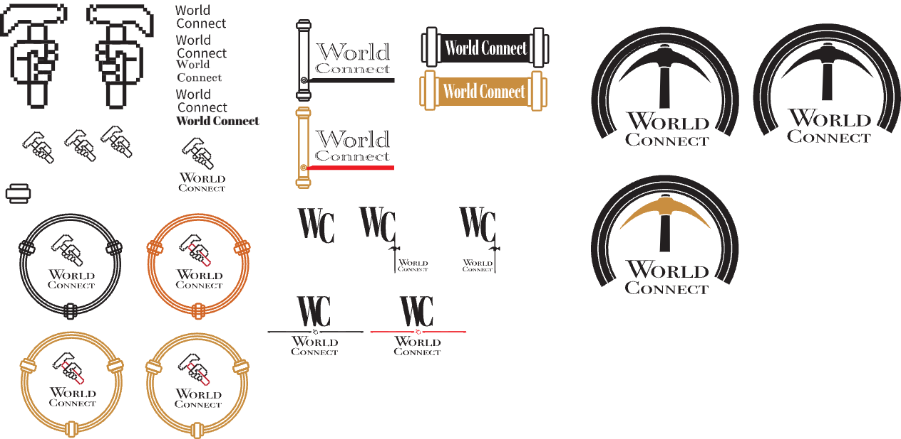